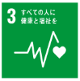
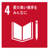
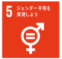
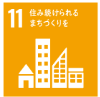
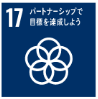

POM PUPPYS bright






2025.08.30 レジデンシャルパークSHOWA 春日部大凧花火大会
2025年8月30日、当社がネーミングライツを取得した「レジデンシャルパークSHOWA」で開催された春日部大凧花火大会。約18,000人の観客の前で、春日部市を拠点に活動するチアダンスチーム「POM PUPPYS bright」がパフォーマンスを披露しました。
小学6年生から中学3年生までの7名で構成されるこのチームは、その3ヶ月後、2025年11月のJAMfest JAPAN vol.23 Pom Junior Small B部門において全国1位を獲得。2026年5月にアメリカ・フロリダ州オーランドで開催される世界大会「The Dance Summit 2026」への出場権を掴みました。

当社の冠公園で踊っていた子どもたちが、わずか3ヶ月後に全国の頂点に立ち、世界へ──。この物語は、当社の企業理念「覚悟と挑戦」、そして15期スローガン「出会いに感謝」と重なるものでした。
当社はスペシャルスポンサーとしてチームの世界挑戦を応援しています。埼玉武蔵ヒートベアーズ、東京レジデンシャルに続き、チアダンスという新たなジャンルへの支援を通じて、地域スポーツ振興と次世代育成に取り組んでまいります。
当社は今後も、スポーツを通じた地域貢献・子どもたちの夢の応援を通じて、社会への「恩返し」を続けてまいります。
詳しくは、下記オフィシャルサイトをご覧ください
オフィシャルサイトを見る
※ スポンサー就任後のCSRページ掲載イメージです